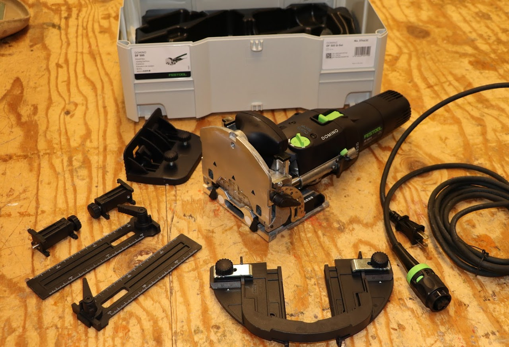

Equipment Inventory

Manufacturer: Festool
Model#: Domino DF 500 Q
Serial#: 40484105
Acquired: November 2019 (Perkins)

Manufacturer: Festool
Model#: Domino DF 700 EQ
Serial#: 40282947
Acquired: December 2020 (Perkins)
For Students / Users
- Festool DF500 Domino/Tenon Joiner Safety & Use Guidelines
- Festool DF700 Domino/Tenon Joiner Safety & Use Guidelines
- Introduction to the Domino Joiner Assignment
- Festool DF500 Domino/Tenon Joiner User's Manual
- Festool DF500 Domino/Tenon Joiner Supplemental Users Manual
- Festool DF700 Domino/Tenon Jointer User's Manual
- Festool DF700 XL EQ Domino/Tenon Joiner Supplemental Users Manual